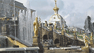
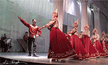
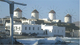
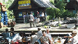
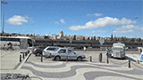
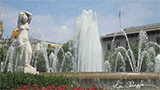
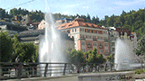

|
俄羅斯彼得夏宮的
噴泉與雕像
Fountains & Statues in
Peterhof
►Tritons,
Pandora
►Actaeon,
Mercury
►Genymede,Actaeon,
Discus thrower,
Mercury
►Samson,
Naiad１,
Siren, Naiad２
►Amazon,
Jupiter, Flora
►Venus,
Jupiter, Amazon
►Cere,
Florence Faun |
 |
尼古拉斯基宮殿中的俄羅斯民俗舞蹈
Russian
Folk Dance
at Nikolaevsky
Palace
►"Maidan"
,
a Cossack
song and dance group
►"The
Stars of St. Petersburg", a dance group
►"The
Stars of St. Petersburg", a dance group,
dual role |
 |
|

 |
歐洲假期
Holidays
in Europe
◄Changing
the Guard in front of
Greek Parliament
◄Greek Hip Hop
◄Greek island Crete
◄Greek island Mykonos
◄ Esterhazay Palace, Australia
◄Hofburg palace in Vienna
◄Esterhazay Palace, Australia
◄Preewald in Luebben, Germany
◄Prague royal castle
◄View from Charles Bridge, Prague
◄Spa Town Karlovy Vary, Czech
◄Ancient city Krumlov, Czech
◄The blue Danube
◄Knight fight demo in Visegrad, Hungary
|
 |
伊比利半島之旅
Travel
in Iberia
◄Belém Tower in Lisbon, Portugal
◄The
end of the world:
Cabo da Roca,
Portugal
◄Alhambra
of
Granada, Spain
◄Alhambra Generalife fountains
◄The
Roman bridge
of
Córdoba,
Spain
◄Toledo,
Spain
◄Columbus Square, Madrid
◄The Statue of Cervantes
and Don Quixote, Madrid
◄Fountain of the Six Putti by Jaume
Otero in Catalunya Square, Barcelona
◄Bus stop in Barcelona
◄Gibraltar monkeys
|
|
巴塞隆納公共藝術
Public arts
in
Barcelona
►Spain Square in Seville
►Gibralfaro Castle fountain in Malaga
►Statue of Carlos III in Madrid
►Young Girl (sculpture by Josep
Dunyach), Motherhood (by Vicenç Navarro
Romero,1928) in
Catalunya Square,
Barcelona
►Youth (by Josep Clarà,1928) in Catalunya Square
►Girl (by Josep Dunyach) in Catalunya Square
►Sibeles Square Fountain in Madrid
|
 |
中歐之泉
Fountain
in
Central
Europe
►Zwinger
palace in Dresden, Germany
►Bruehl Terrace
in Dresden
►Schloss Sanssouci Palace in Potsdam, Germany
►Schonbrunn Palace in Vienna, Australia
►Kunsthistorisches Museum
in
Vienna
► Hundertwasser house in Vienna
►Spa town Karlovyvary, Czech
►Ancient
city Krumlov, Czech
►Royal Castle in Prague, Czech
|
 |